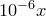
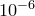
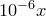
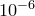
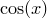
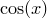
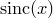

Two special functions, int_dx() and diff_dx(), may be used to integrate or differentiate algebraic expressions numerically. In each case, the letter x is the dummy variable which is to be used in the integration or differentiation and may be replaced by any valid variable name of up to 16 characters in length.
The function int_dx() takes three parameters – firstly the expression to be integrated, which may optionally be placed in quotes, followed by the minimum and maximum integration limits. These may have any physical dimensions, so long as they match, but must both be real numbers. For example, the following would plot the integral of the function  :
:
plot int_dt('sin(t)',0,x)
The function diff_dx() takes two obligatory parameters plus one further optional parameter. The first is the expression to be differentiated, which, as above, may optionally placed in quotes for clarity. This should be followed by the numerical value  of the dummy variable at the point where the expression is to be differentiated. This value may have any physical dimensions, and may be a complex number if complex arithmetic is enabled. The final, optional, parameter to the diff_dx() function is an approximate step size, which indicates the range of argument values over which PyXPlot should take samples to determine the gradient. If no value is supplied, a value of  is used, replaced by  if
of the dummy variable at the point where the expression is to be differentiated. This value may have any physical dimensions, and may be a complex number if complex arithmetic is enabled. The final, optional, parameter to the diff_dx() function is an approximate step size, which indicates the range of argument values over which PyXPlot should take samples to determine the gradient. If no value is supplied, a value of  is used, replaced by  if  . The following example would evaluate the differential of the function  with respect to at :
. The following example would evaluate the differential of the function  with respect to at :
|
print diff_dx(’cos(x)’, 1.0) |
When complex arithmetic is enabled, PyXPlot checks that the function being differentiated satisfies the Cauchy-Riemann equations, and returns an error if it does not, to indicate that it is not differentiable. The following is an example of a function which is not differentiable, and which throws an error because the Cauchy-Riemann equations are not satisfied:
|
set num comp print diff_dx(Re(sin(x)),1) |
Advanced users may be interested to know that int_dx() function is implemented using the gsl_integration_qags() function of the Gnu Scientific Library (GSL), and the diff_dx() function is implemented using the gsl_deriv_central() function of the same library. Any caveats which apply to the use of these routines also apply to PyXPlot’s numerical calculus.
Integrating the function .
The function cannot be integrated analytically, but it can be shown that
In the following script, we use PyXPlot’s facilities for numerical integration to produce a plot of
We reduce the number of samples taken along the abscissa axis to 80, as evaluation of the numerical integral may be time consuming on older computers. We use the set xformat command (see Section 1.7.6) to demark both the x- and y-axes in fractions of |
||||||||
set samples 80 |
||||||||
![\includegraphics[width=0.9cm]{tick.eps}](images/img-0030.png)
![\includegraphics[width=0.9cm]{cross.eps}](images/img-0029.png)
![\[ y=\int _0^{x} \mathrm{sinc}(x)\, \mathrm{d}x . \]](images/img-0135.png)
 :
:  pi$"%(x/pi)
pi$"%(x/pi)